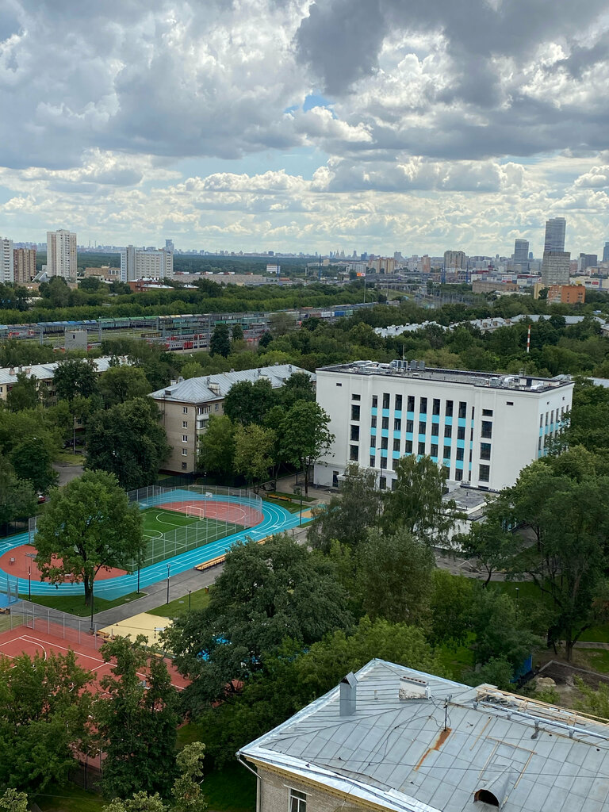
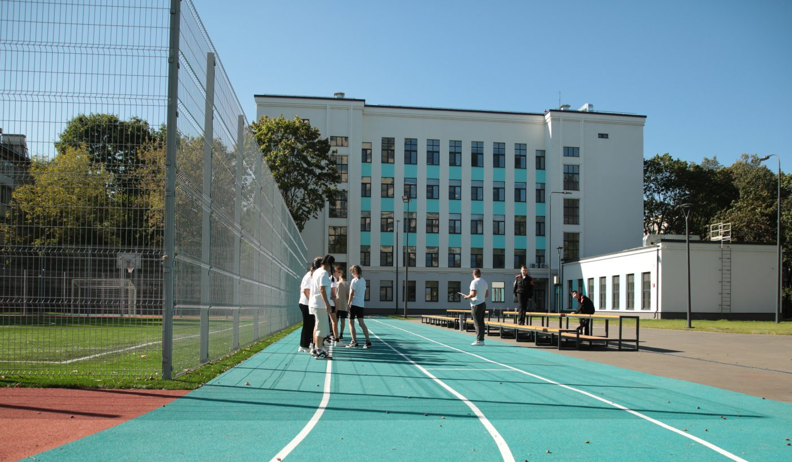
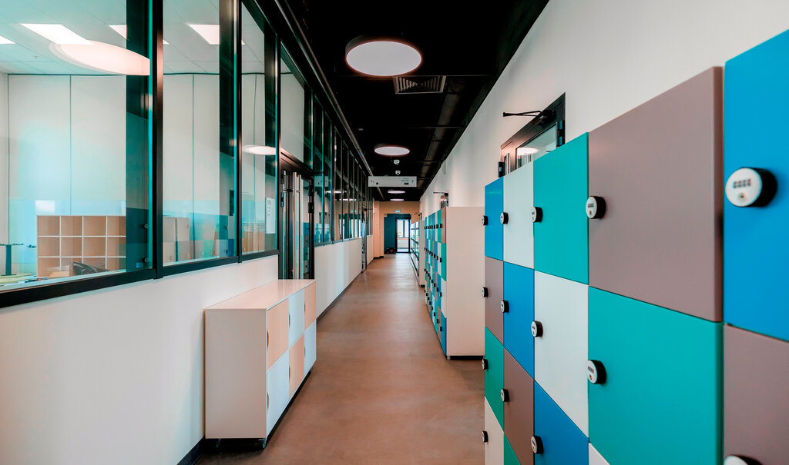
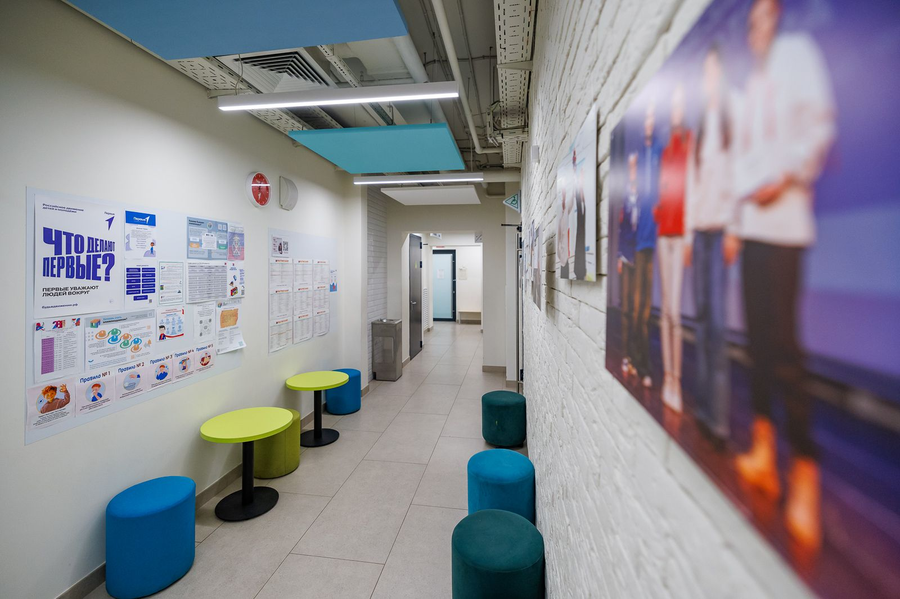
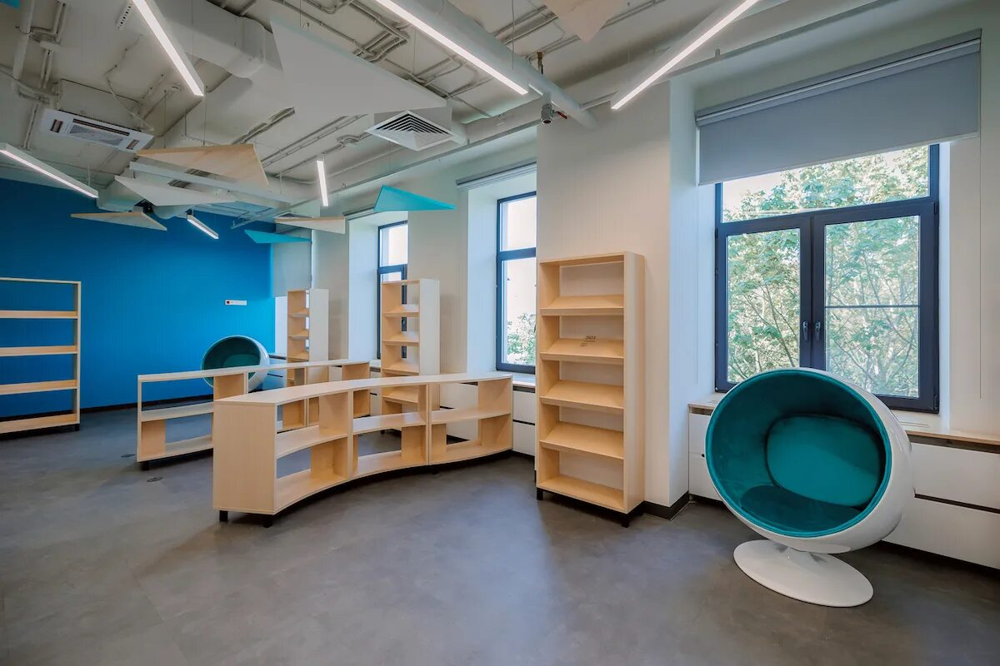
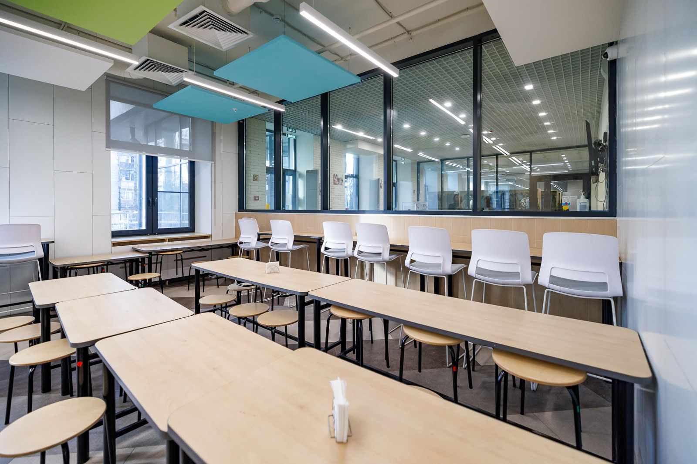

Описание здания и архитектурные особенности
Корпус на ул. Коминтерна, д. 4, корп. 1
Архитектурные особенности (оригинальный вид)
Здание относится к типовым проектам школьных зданий середины 1950-х — 1960-х годов (вероятно, близко к проектам серии МЮ или аналогичным кирпичным/крупноблочным пятиэтажкам на 800+ мест). В то время архитектура школ переходила от сталинского декоративизма к более функциональному и экономичному стилю, с элементами советского модернизма, но ещё с некоторыми декоративными акцентами.
Основные характеристики:
- Объёмно-пространственная композиция: Прямоугольное в плане, компактное пятиэтажное здание (типичная «коробка» с возможными пристройками для актового и спортивного залов). Классы обычно группировались вокруг рекреаций.
- Фасады: Простые, лаконичные. Вертикальные членения, ритм окон. Кирпичная или крупноблочная кладка с контрастной окраской.
- Конструкции: Несущие стены (кирпич или блоки), высокие окна для хорошей освещённости классов.
- Крыша: Плоская или с небольшим скатом.
- Функциональность: Высокие потолки (3–3,5 м), просторные рекреации, отдельные пристройки для спортзала и актового зала.
Это был стандартный «дворец знаний» хрущёвско-брежневской эпохи — функциональный и рассчитанный на массовость образования.
Современный вид после модернизации (2024)
Здание полностью преобразилось внутри и снаружи:
- Фасад: Перекрашен в бело-голубые тона, заменены все окна и двери, добавлен пандус.
- Интерьеры: Современный дизайн в стиле «мягкого лофта», медиатека, комфортные зоны отдыха.
- Благоустройство: Обновлена прилегающая территория.
Этапы реконструкции и модернизации
| Год | Этап | Основные работы |
|---|---|---|
| 1965–1966 | Строительство | Возведение здания как школы № 1139 |
| 2010-е | Присоединение | Вхождение в состав школы № 281 |
| 2023–2024 | Капитальная модернизация | Полная реконструкция по программе «Моя школа». Одна из пилотных школ Москвы. |








← На главную